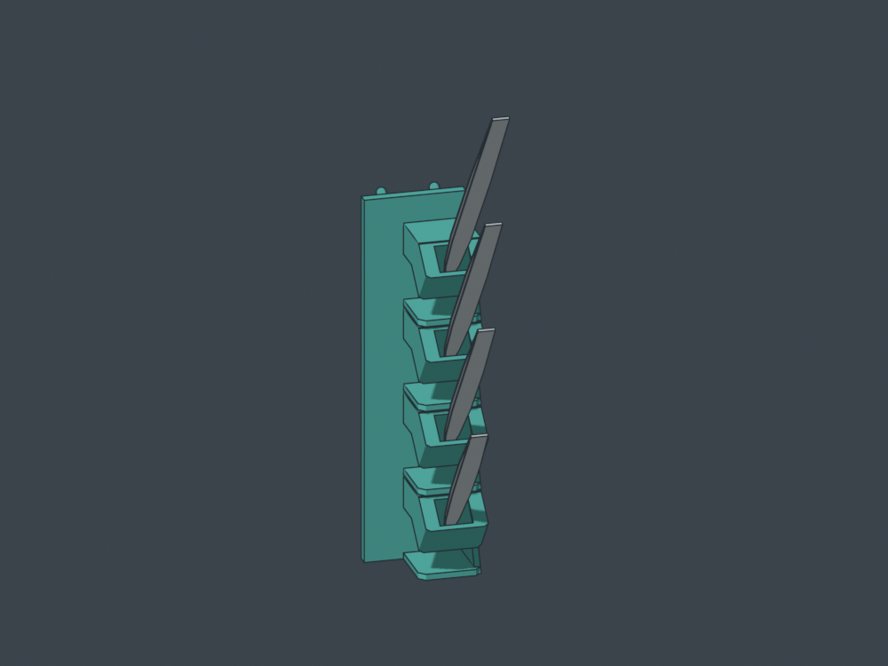
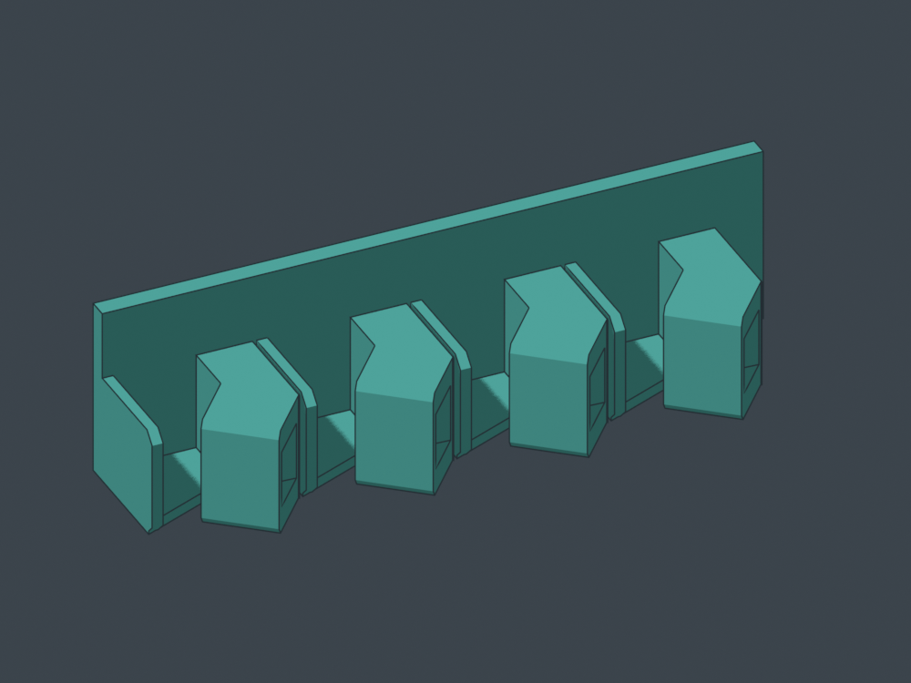

Tweezers, anchored all the way down.
v7 · four tweezers · two grid cells · 48.8 mm wide · 25.4 mm mounting grid
Two unchanged upper hooks and 12 short straight locators: one mount at every fully covered hole. Locators are Ø6.45 mm for nominal Ø6.35 mm holes, with Ø5.2 mm lead-in tips and 3.8 mm projection from the board face.

Same funnels, tilt and delicate-tip clearance.

Seven occupied grid rows, two columns; broad flush rear face.
Installed STEPRight-cheek STLFreeCADPortable CAD bundle
Physical retention trial. The user's previous print pulled and rocked off the wall. This revision adds nominal 0.10 mm diametral interference; retention force and wear are not measured. Insertion/removal geometry stays within a stated 0.30 mm local radial compliance budget at the straight locator bores. Upper hook contact uses its existing rear-rim budget. The model is not rigidly collision-free, sliced or physically fit-qualified.
Chosen print face

Right cheek remains the bed face. New locator undersides require fresh layer/support review; earlier B6 slices do not qualify v7.
Rotate the rear CAD
Dimensions and fit · Mounting motion study
Open index.html locally for images/downloads. Run the included loopback server for local 3D.